M1: three ways to meet the chair
Everything above the backrest's top edge is the same M1 stem, chin flare and locked F3 headrest. Only the base changes. All are drawn at the long neck (H100), with the relief window. For review only.
Your two questions first
- Did the base need to be that wide? No. The mast is held by its plug in the 45 mm socket plus the two M5 bolts. The wide foot added almost nothing to strength; it was styling. I narrowed it from ±58 to ±42 mm, the width of the receiver below it.
- "One piece sticking out of the other": you were right. The socket in the chair was breaking through the back of the receiver housing, so a piece of the mast showed through a hole in the chair. The receiver now wraps the whole socket with at least 3 mm of wall, which I checked by modelling a 3 mm-thicker socket. Its top ends exactly on the foot's outline: from underneath, nothing hangs in the air.
B1 Spine (recommended)
The receiver is a narrow, soft lens that runs down the back of the backrest like a spine and fades into it at about z 270. The mast's foot sits exactly on top of it.
- Reprinted top_back (413 cm³, against 336 for the original).
- 56 × 26 plug in a 45 mm socket. Two M5 bolts from behind at the centre, flush heads, into nuts slid into the plug. The bolts pull the plug against the socket wall, so there is no play.
- The 2 carbon rods go 45 mm down into the socket, so the carbon backs up the most loaded spot.
- From behind you see one shape rising out of the backrest, plus two small bolt heads.
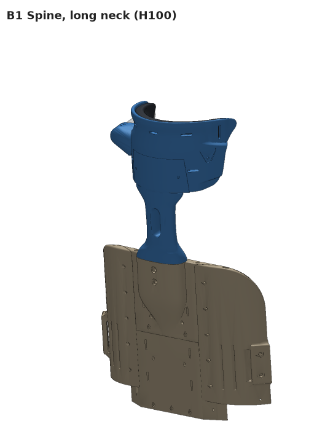
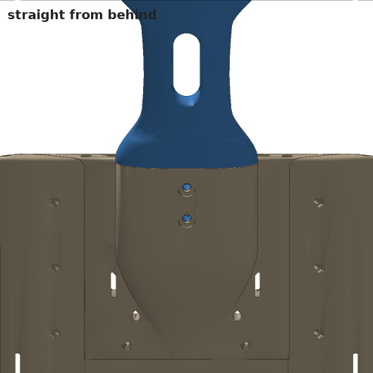
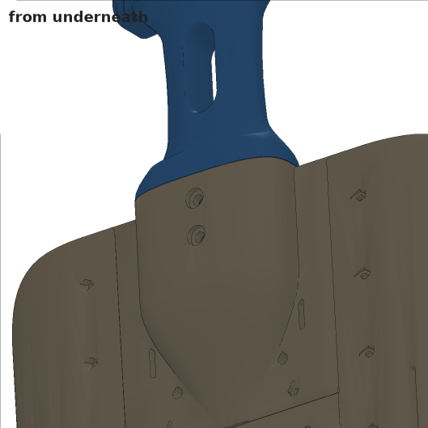
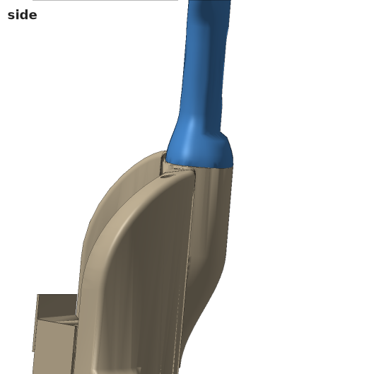
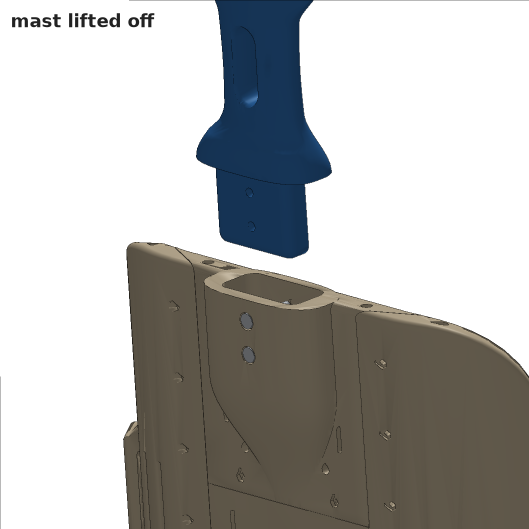
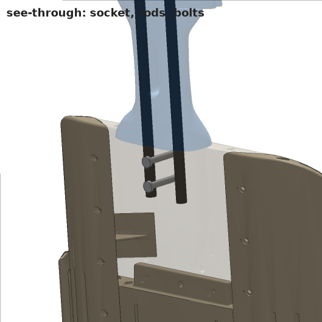
B2 Roll
The backrest's top edge becomes a wide, soft roll, like a car seat's top, and the socket sits inside it. The mast rises out of the middle of the roll.
- Same plug, bolts, rods and strength as B1. Reprinted top_back, 419 cm³.
- The roll is wider than the foot, so a flat shelf shows around the foot. Some will like that as a pedestal; to me it reads less seamless than B1.
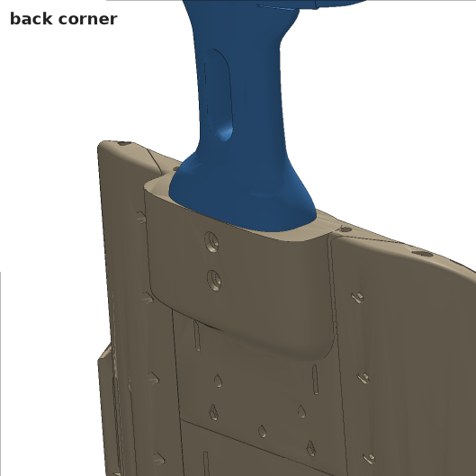
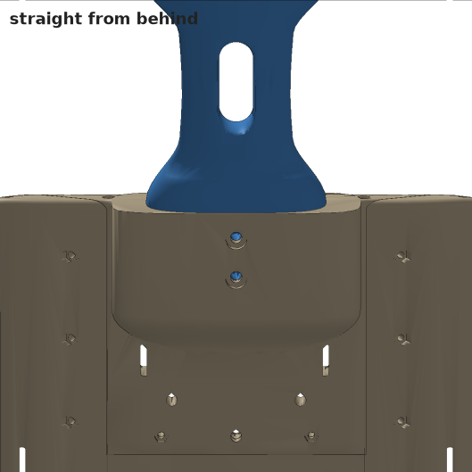
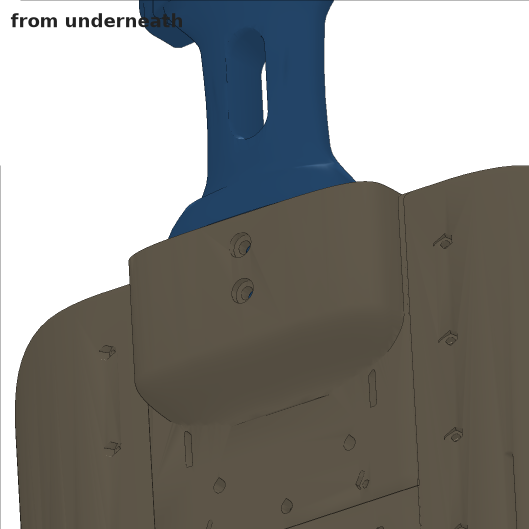
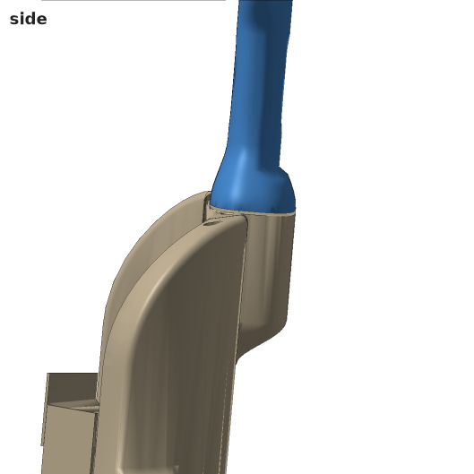
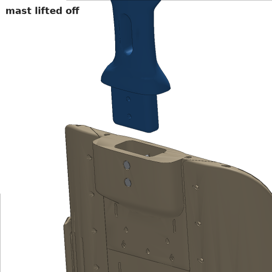
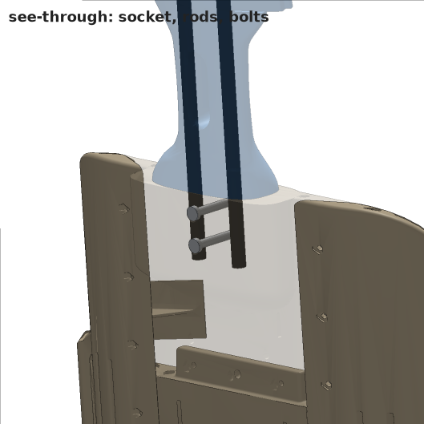
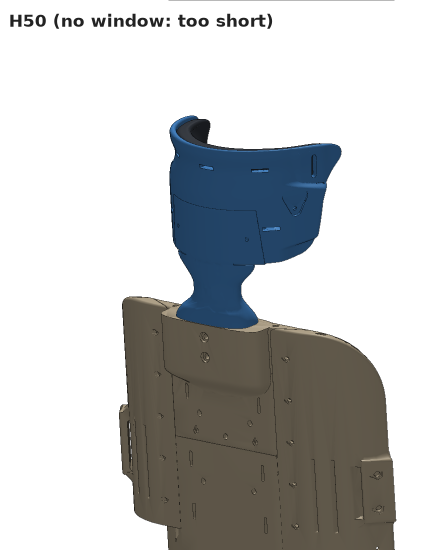
B3 Tongue: no chair reprint
The mast's foot continues down the back as a tongue, bolted through the chair's own rear M5 holes: x 0/±37 at the top row and x ±30 at the lower row. The bolt heads sit in the recesses already on the front of the backrest.
- Works on every existing chair, with no new top_back.
- Weaker: the tongue's top bolt row is the weak spot (holes and nut pockets), and the carbon rods can't go below the top edge because the backrest is in the way. That means no carbon backup at the base.
- The mast print is bigger (292–345 cm³). The 5 nut pockets show on the back unless I add a cover.
- Uses 5 M5 bolts. Each sees about 200 N in a 300 N knock at H100, which is easy for M5.
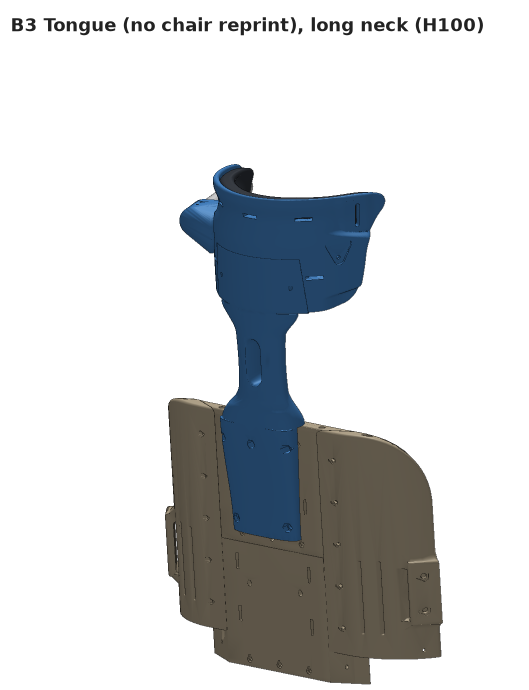
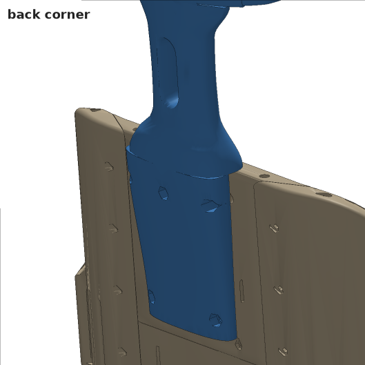
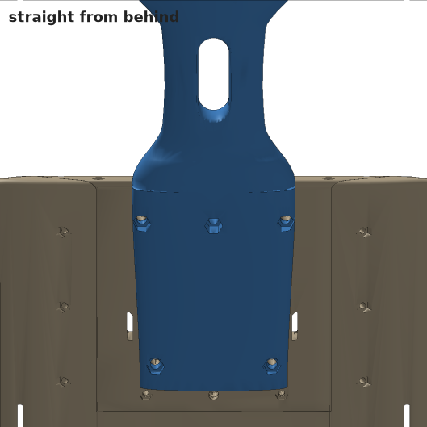
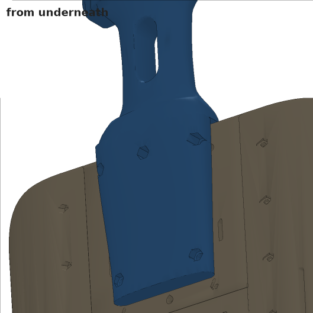
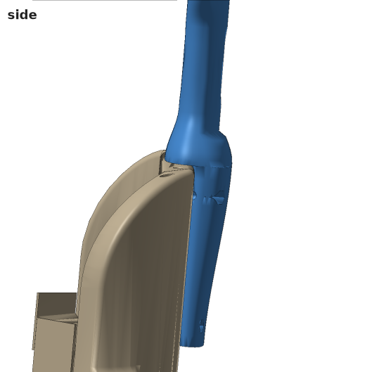
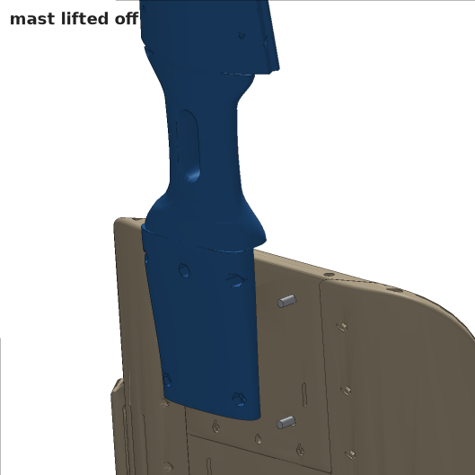
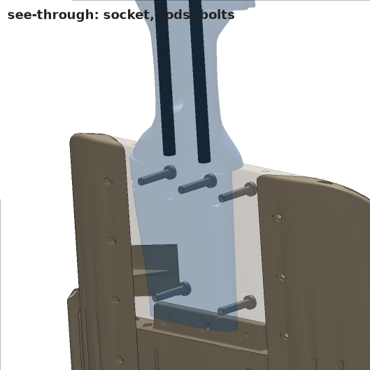
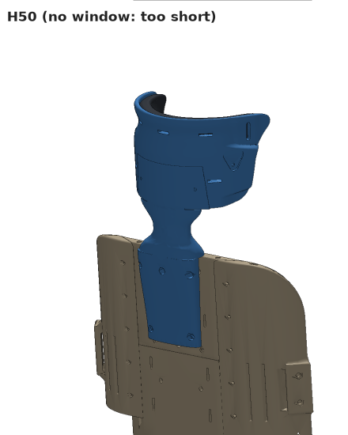
Relief window
This is one soft stadium-shaped window through the stem, between the two rods. They keep 4 mm of wall. It only appears where the stem is long enough (about H75 and up). At H100 it saves 16 cm³ and costs about 10% of strength (safety factor 4.4 → 4.0) and 0.2 mm more flex. It doesn't help strength; it is there for looks and weight. Keep it if you like how it looks lighter.
Strength, H100 (300 N knock / 150 N push / 250 N side bash)
| B1 Spine | B2 Roll | B3 Tongue | |
|---|---|---|---|
| Plastic safety factor, knock (no window / window) | 4.4 / 4.0 | 4.4 / 4.0 | 3.0 / 3.0 |
| Side bash safety factor | 6.3 | 6.3 | 7.6 |
| Pad flex, 150 N push (no window / window) | 1.2 / 1.45 mm | 1.2 / 1.45 mm | 1.85 / 2.1 mm (counted from the top bolt row only, so pessimistic) |
| Carbon backup at the base | yes, SF 3.1–4.3 | yes | no |
| Play / wobble | none, the bolts pull the plug tight | none | none, bolted straight on |
| Chair change | reprint top_back | reprint top_back | none |
| Mast volume | 218–234 cm³ | 218–234 cm³ | 329–345 cm³ |
At H50 B1 and B2 have a safety factor of 6.4, and B3 4.1.
All three were checked against the chair, the pad, the foam, the lock screws and the screwdriver path, and the mast lifts out cleanly. All clashes are 0.
My pick
B1 Spine. It is the cleanest join, the strongest (with carbon backup at the most loaded spot), has no wobble, and from behind shows only two bolt heads. B3 is worth keeping as the retrofit kit for chairs already out there, but it needs more work: a cover over the nuts and a thicker tongue.
And yes, I agree with M1. It is one simple print, it is at least 4× strong enough at the tallest height, and it reads as one shape with the headrest.